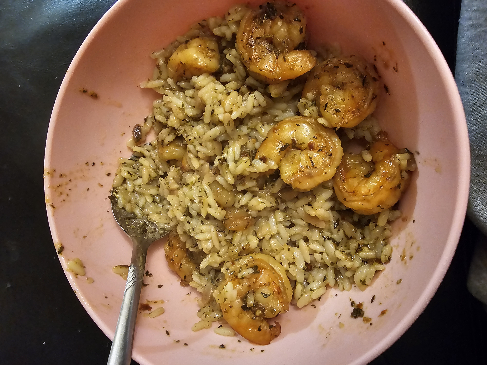
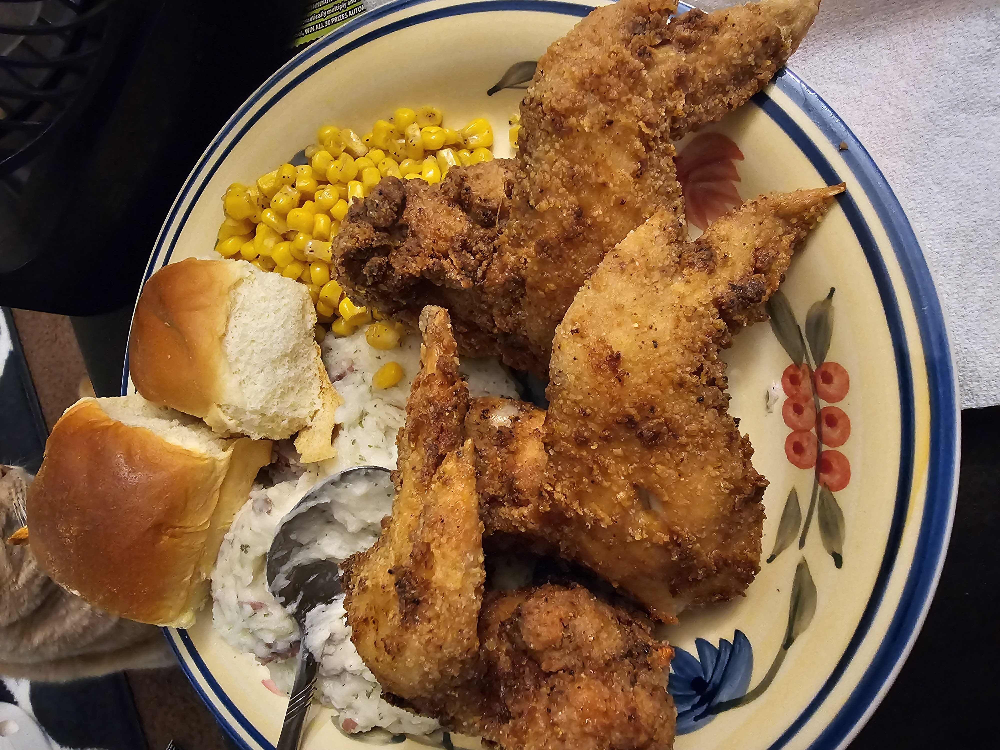

Shrimp and Rice Bowl
When it comes to food, I am one of the most annoyingly picky eaters. I like things to be simple and not too complicated to cook. One of my most favorite dishes to make is simple jerk shrimp over rice with dinner rolls. It takes no more than 30 minutes to complete this meal, and it's what I cook when I don't feel like making a mess in the kitchen! And it tastes amazing!
Fried Chicken
Another one of my favorite dinners to cook is a staple in most Black households, the classic Fried Chicken Dinner. This is a dish that I make quarterly, if that. I try to eat reasonably healthy, and there is practically nothing healthy about fried chicken so I try not to make it too often. Plus, this meal also destroys my kitchen and is not fun to have to clean up! (And there is my cat in the background trying to sneak a bite!)
